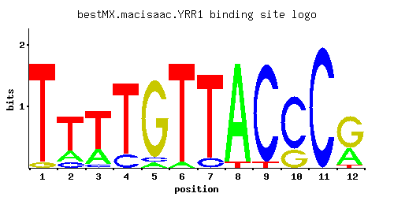

YRR1
YOR162C, PDR2
Zn2-Cys6 zinc-finger transcription factor that activates genes involved in multidrug resistance; paralog of Yrm1p, acting on an overlapping set of target genes
Best-performing DNA-binding model.

View and copy the recommended matrices ↘
A | 0.001 0.211 0.263 0.001 0.053 0.053 0.001 0.945 0.001 0.001 0.001 0.315 C | 0.001 0.105 0.053 0.158 0.053 0.001 0.105 0.001 0.945 0.736 0.997 0.001 G | 0.053 0.001 0.001 0.001 0.893 0.001 0.001 0.001 0.001 0.262 0.001 0.631 T | 0.945 0.683 0.683 0.840 0.001 0.945 0.893 0.053 0.053 0.001 0.001 0.053
A | 0 21 26 0 5 5 0 94 0 0 0 31 C | 0 10 5 15 5 0 10 0 94 73 99 0 G | 5 0 0 0 89 0 0 0 0 26 0 63 T | 94 68 68 84 0 94 89 5 5 0 0 5
A | -5.77 -0.42 -0.20 -5.77 -1.80 -1.80 -5.77 1.08 -5.77 -5.77 -5.77 -0.02 C | -5.19 -0.54 -1.22 -0.13 -1.22 -5.19 -0.54 -5.19 1.66 1.41 1.71 -5.19 G | -1.22 -5.19 -5.19 -5.19 1.60 -5.19 -5.19 -5.19 -5.19 0.38 -5.19 1.25 T | 1.08 0.76 0.76 0.97 -5.77 1.08 1.03 -1.80 -1.80 -5.77 -5.77 -1.80
Alternative candidate matrices 5
Historical matrix candidates from the original ScerTF database. Expand a source to inspect its original logo, scores, and matrix values.
YRR1Badis et. al.P = 0.5975View matrix ↘
YRR1Foat et. al.P = 8.48e-06View matrix ↘
YRR1Morozov et. al.P = 0.2133View matrix ↘
YRR1Zhu et. al.P = 0.9775View matrix ↘
YRR1Zhao and StormoP = 0.6951View matrix ↘
Gene-level annotations and interactions.
Genes bound in ChIP-chip experiments 157 genes
YAL062W, YAR007C, YAR008W, YBL068W, YBL070C, YBL089W, YBL108W, YBR076W, YBR109C, YBR110W, YBR167C, YBR168W, YBR185C, YBR186W, YBR204C, YBR205W, YBR206W, YCL002C, YCL006C, YCL007C, YCL008C, YCL009C, YCL010C, YCR002C, YCR004C, YCR005C, YCR006C, YCR008W, YCR012W, YCR030C, YCR096C, YDL091C, YDL092W, YDL094C, YDL104C, YDL114W, YDL115C, YDR020C, YDR021W, YDR030C, YDR031W, YDR061W, YDR066C, YDR080W, YDR098C-A, YDR098C-B, YDR102C, YDR103W, YDR136C, YDR138W, YDR279W, YDR286C, YDR287W, YDR292C, YDR318W, YDR322W, YDR473C, YER013W, YER133W, YER134C, YER138C, YFL066C, YFL067W, YFR007W, YFR056C, YGL178W, YGL192W, YGL194C, YGR091W, YGR093W, YGR184C, YGR188C, YGR287C, YGR288W, YHL012W, YHL013C, YHL050C, YHR041C, YHR042W, YHR044C, YHR045W, YHR123W, YHR171W, YIL043C, YIL048W, YIL075C, YJL023C, YJR010C-A, YJR088C, YJR089W, YJR098C, YJR099W, YJR100C, YJR154W, YKR003W, YKR094C, YKR095W, YLL014W, YLR055C, YLR056W, YLR083C, YLR097C, YLR103C, YLR104W, YLR265C, YLR269C, YLR271W, YLR360W, YLR373C, YLR375W, YLR412W, YLR428C, YLR430W, YML072C, YML112W, YMR060C, YMR061W, YMR071C, YMR072W, YMR099C, YMR100W, YMR126C, YMR187C, YMR204C, YNL048W, YNL049C, YNL083W, YNL084C, YNL126W, YNL272C, YNL323W, YNL325C, YNR011C, YNR012W, YNR054C, YOL099C, YOL144W, YOL145C, YOR090C, YOR091W, YOR115C, YOR188W, YOR353C, YOR368W, YOR386W, YPL070W, YPL071C, YPL073C, YPL159C, YPR007C, YPR068C, YPR087W, YPR092W, YPR107C, YPR108W, YPR118W, YPR198W
Genes affected by TF deletion 53 genes
YDR068W, YKR012C, YHR146W, YJL115W, YDL127W, YMR189W, YPL014W, YML027W, YBR129C, YFR006W, YGR286C, YAR007C, YMR199W, YOR074C, YMR145C, YNR016C, YIL054W, YNL309W, YNR035C, YBR135W, YNL310C, YIR015W, YNL065W, YOL002C, YGL055W, YLR108C, YLR046C, YNL289W, YGR139W, YNL290W, YDR482C, YLL013C, YLL044W, YLR326W, YLR358C, YLR390W, YNL195C, YOR304C-A, YOR367W, YBL037W, YCL002C, YCL038C, YDR357C, YJL167W, YNR047W, YBR054W, YLR297W, YOR027W, YMR034C, YBR244W, YMR181C, YOL101C, YPL165C
Genes supported by both experiments 2 genes
YAR007C, YCL002C